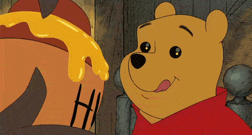

This honey jar is one of the most important things in Whinnie Pooh's life! He will always love this jar to the fullest.
As Winnie was a big part of my childhood and my hero who loves honey, I wanted to recreate his love in InDesign for my assignment.
It is very inspiring what Winnie said about honey:
“The only reason for being a bee is to make honey. And the only reason for making honey is so I can eat it.”
